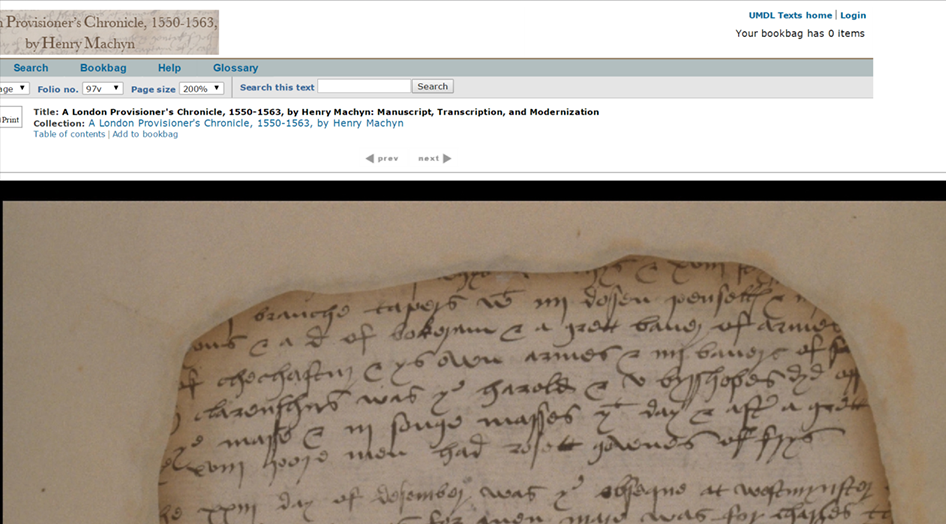
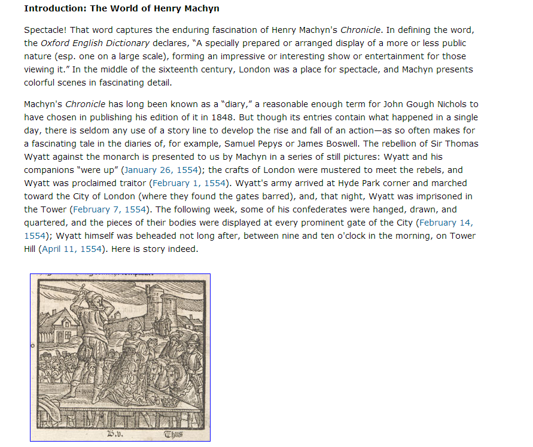
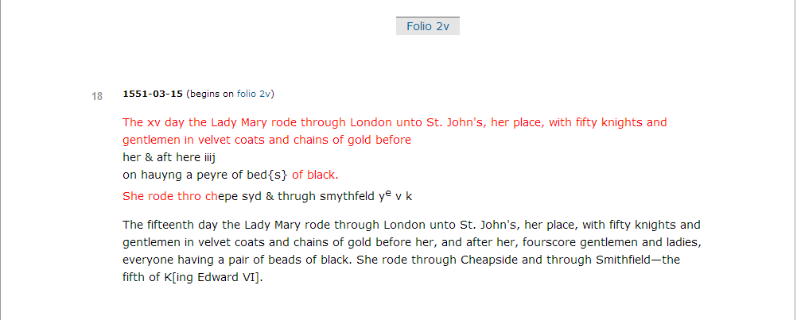
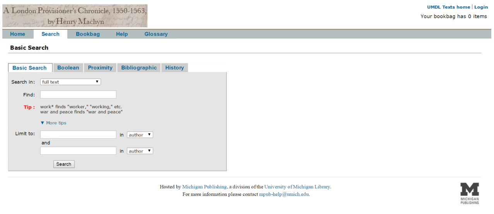
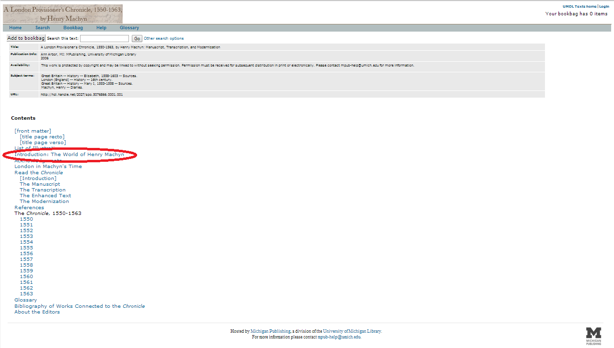

16th Century Chronicle to 21st Century Edition: A Review of The Diary of Henry Machyn
Table of Contents
Abstract
This paper reviews A London Provisioner’s Chronicle, a digital edition of the manuscript chronicle inscribed by London shopkeeper Henry Machyn from 1550 to 1563. Working from high resolution scans of the fire damaged original and consulting later citations by antiquarian John Strype, the editors were able to not only produce an edition which transcoded the existing artifact into a digital medium, but also to reconstruct large sections of the damaged sections to approximate its original state. However, while the edition provides a faithful – if somewhat minimal – reading copy of Machyn’s chronicle, the edition falls far short of the potential offered by digital publication.
Introduction
On a shelf in the British Library sits a fire-damaged manuscript, its charred leaves mounted to paper frames, marked MS Cotton Vitellius F.v. These 162 leaves, damaged by the fire in the Cottonian Library of 1731, are the remains of the chronicle – or diary, depending on the scholar consulted – of Henry Machyn, a 16th century provisioner and tailor in the city of London. Machyn, a dealer in funeral trappings, inscribed in the 1550s and 1560s a far-ranging – if somewhat erratic – record of the events of his day. Whatever spoke of pageantry or gossip – from a royal procession to a local girl’s suicide, from public merriment to public executions, from high affairs of state to the scandalous, and more local, sexual affairs of one Dr. Langton – Machyn dutifully noted. Traditionally of interest for its depiction of the lives of the higher estates – Edward VI’s death; the rise of Queens Jane Seymour, Mary I, and Elizabeth I; and the infamous rebellion of Thomas Wyatt – the chronicle continues to be of relevance for its depiction of more local events: the suicide of a cuckolded armorer, or the revels of the poor during festival times. Perhaps unsurprisingly, given his line of work, funerals particularly caught Machyn’s reporting gaze, but even in this he was surprisingly democratic: in his chronicle, the funerals of the great and powerful and those of infamous traitors share the page with that of a “mean gentleman” physician of Cambridge.
Though the work of an amateur chronicler – and a relatively uneducated amateur, at that (Mortimer 982) – the manuscript has held particular interest over the centuries as much for historians, for its depictions of affairs of state, as for linguists, as a source of insight into 16th century pronunciation. However, the chronicle has seen little publication since its collection by Robert Cotton in the early 17th century. While John Strype quotes from it extensively in his 1598 Ecclesiastical Memorials, it was not until John Nichols’ 1848 The Diary of Henry Machyn that Machyn’s work was completely transcribed, printed, and published. However, even 18th century scholars found numerous errors and omissions in Nichols’ transcription (Bailey–Miller–Moore.), and subsequent critics have been no more complimentary (Mortimer 981). A new edition has been long needed, and in 2006 Richard Bailey, Marilyn Miller, and Colette Moore addressed this need, publishing the online edition A London Provisioner’s Chronicle, 1550-1563, by Henry Machyn. This review will examine the Chronicle not only on its merits as a work of scholarly editing but also on the basis of its presence as a digital example of that field of work.
The Edition



Similarly, an opportunity may have been missed with the editors’ choice not to provide an index to the chronicle’s far-ranging field of topics. Even though Machyn’s own margin-inscribed keywords would be ideal for the task, the editors made the choice – remarked without justification in their explication of the transcription – not to include them (Bailey–Miller–Moore). While any indexing would certainly ease the task of navigating Machyn’s rather haphazard organizational strategies, the use of the author’s own marginalia to this end would, without doubt, add further value to any edition of the Chronicle, potentially giving insight into the author’s own understanding of the organization of his work.
All the same, the editors’ priorities are explicitly on providing a straightforward reading copy of the work and on distinguishing the original 16th century language from 18th or 21st century reconstructions. While an index or a more nuanced apparatus might preserve the document’s transmission history or give deeper insight into the author’s intent, neither adds significantly to this primary purpose. Thus, while their inclusion might be considered in future expansions or emendations, the present edition can hardly be considered less than rigorously edited for their lack.
The Digital Divide
However much the edition succeeds in its scholarly aims, as it is a digital scholarly edition the question also looms: how ‘digital’ is it, exactly? Even if, as Alan Liu indicates, ‘the ‘content’ of any new medium is old media’ (Liu), we still must accept a dividing line – or perhaps a boundary zone – beyond which a work ceases to be inherently digital and is instead simply a digital echo of a previous media form. While its publication medium cannot be denied, the digital Chronicle treads dangerously close to the border that Patrick Sahle distinguishes between a digital edition per se and a digitized edition. If a digital edition, as Sahle argues, must be ‘guided by a different paradigm’ and ‘cannot be printed without loss of information and/or functionality’ (Sahle), then the Chronicle is almost entirely grounded in the print paradigm: the edition’s transcription and apparatus can be easily accommodated by modern printing technologies, the parallel printing of the modernization with the original text is similarly easily to duplicate, and the scholarly meta-text could be included as front-matter in print, with the provided images of the manuscript pages included as an appendix. In short, though published digitally, the edition bears all the hallmarks of having been informed by a print paradigm.
In fact, even the edition’s online organization and layout seem almost aggressively print-centric. While there is a navigation panel on the start-page, allowing for random access of some the edition’s content, this navigation panel is available only from the start-page, and links to only some of the edition’s content. The bulk of the navigation seems to center on a separate table of contents – a necessity in a print edition, but unnecessarily skeuomorphic in a digital one. Further following this print paradigm, this table of contents presents a series of links to the edition’s content, starting with the sections ‘title page’ and ‘front matter’ and proceeding to the subdivisions of the chronicle itself, divided by year. Navigation within these sections is also notably book-like, reliant on either clicking a ‘Previous Section’ or ‘Next Section’ link to navigate ‘forward’ or ‘backward’ through the content, or on clicking the browser’s ‘Back’ button to return to the table of contents. This form of navigation is hardly distinguishable from accessing the pages of a printed work, but without the convenience of actual pages.

Nor does the edition’s addressing scheme – an integral part of its digitality, if not necessarily a digital affordance – lend itself to easy navigation or, for that matter, citation. The URLs for any given sections of the Chronicle are an unintelligible hash of subdirectories, files, and arguments: the URL for the section containing the year 1550, for example, reads ‘http://quod.lib.umich.edu/m/machyn/5076866.0001.001/1:8.5/--london-provisioners-chronicle-1550-1563?rgn=div2;view=fulltext’. Weighing in at 120 characters, the URL is far too cumbersome for any attempt at citing individual sections. Nor do alterations to this URL lead to particularly expectable results in navigation. Removal of the file designation and/or the arguments – the bits after the last slash, before and after the ‘?’ respectively – from this URL directs the browser to the edition’s image frame, displaying the digitization of the first page of the chronicle. While this could be understandable, given that the URL in question is for section 1550, and Folio 1r is the first page dealing with that year, it is less clear why truncating any other annual section would lead to the same image. Meanwhile, the problem is only exacerbated by the fact that accessing the same 1550 section from the navigation bar on the start-page – as opposed to from the table of contents, which generated the example URL – yields a completely different and longer URL, and one even less susceptible to manual modification.
It is possible, of course, that the navigational issues, as well as the incomprehensible resource identifiers, stem from issues of the publishing platform rather than the editing practice. The central problem with the URLs, after all, seems to be that they are more instructions to the publishing platform than an actual identifier of the textual resources. But it is exactly that ‘possible’ that highlights this edition’s central weakness: its critical and technical opacity. The edition offers no access to its original document-descriptive data encoding, no API for interfacing the text with other corpora or critical engines, and no explanation for or explication of these lacks. To the contrary, the edition seems to carefully obfuscate any hint of a connection between its presentation and any underlying markup, while reserving all rights of use under copyright, explicitly forbidding any form of reproduction or reuse without permission of the University of Michigan Press. Without access to that same ‘behind the scenes’ view which the edition seems so anxious to disallow, however, any insights into the editorial encoding practices or data modeling which inform this edition must be either gleaned from the short ‘About the Transcription’ page, or be utterly speculative.
Conclusion
In conclusion, A London Provisioner’s Chronicle sets out to make available a reliable, reconstructed reading copy of the manuscript of Henry Machyn, and it succeeds in that goal, but only in so far as it embraces a narrow understanding of the term ‘reading’, one rooted in the assumptions of previous media forms. However, reading is and always has been a technologically mediated activity, and as our technology grows more sophisticated, affording more and more varied ways of interacting with information, so must our understanding of reading expand with it. Reading, especially scholarly reading, in a digital medium reaches beyond the limits of the page – even beyond the intention of the author or editor – and invites a certain unruliness, a desire to interact with the text in ways besides the strict linearity afforded by the codex.

But as far as I can deduce, the majority of the edition’s shortcomings as a digital text can be attributed not so much to the editors’ theory of their source text, but rather to a lack of theorizing regarding the resulting edition. Whatever the strengths of the UMDLTexts hosting system – and I imagine that ‘simplicity of integration’ and ‘broad applicability’ rank high among them – it seems singularly inappropriate to the display of this particular edition. Beyond even the verbose URLs and insufficient search mentioned above are a host of other hosting–edition mismatches that make for a confusing experience browsing the edition. There is a ‘Bookbag’ feature, prominently displayed in the toolbar of most pages, which is nowhere documented within the edition. A single ‘Add to Bookbag’ button can be accessed from the table of contents, but clicking it returns no confirmation or explanation of what the action accomplishes. While it appears to be some form of citation generator, probably tied into a library- or university-wide document management system, the lack of further access to that system for outside users makes its prominent inclusion of limited overall value. Similarly, the way UMDLTexts shifts the view between its display of the transcribed text and the original images leads to some counter-intuitive interface choices as well, in particular, the inclusion of a special ‘search’ toolbar in the single-page image display. The inclusion of this option only for single image pages, especially as the toolbar already contains a full-text search feature, would seem to indicate that it represented a feature of searching only the displayed image, possibly with a coordinate system to display the original orthography of the search term. Instead, search terms entered into this bar call the same full-text search, with all of the foibles previously mentioned, and with no reference at all to the displayed image from which the search was called. In summary, the UMDLTexts system, with its representation of ‘front matter’ and its eye towards bibliographic linking, seems optimized for the presentation of digital proxies of existing print works, digitized editions, and its use as the medium of choice for a born-and-raised digital edition of a manuscript, two media that share few of the affordances of print, seems to result in many of the shortcomings this edition exhibits.
Of course, another affordance of digital media is its extreme mutability, and perhaps it is better to say not that the Chronicle is lacking in its digital affordances but rather that it is currently lacking in them. It is possible that the UMDLTexts system – geared as a ‘one-size-fits-most’ solution for the UM Library system – is too broad and established a system to be tailored sufficiently to fully take advantage of the affordances that could make this edition great. However, if it is not so configurable, then the editors would do well to consider migrating to a hosting solution that can do so, especially one that would allow greater access to their core markup, both to human and to machine readers. Because until such time as those changes are made, we can call this only a worthwhile scholarly edition and not actually a digital one.1
Bibliography
- Bailey, Richard W., Marilyn Miller, and Colette Moore, eds. A London Provisioner’s Chronicle, 1550-1563, by Henry Machyn: Manuscript, Transcription, and Modernization. Ann Arbor: Michigan Publishing, 2006. Accessed: 08.11.2014. http://quod.lib.umich.edu/m/machyn/.
- Liu, Alan. ”Imagining the New Media Encounter”. A Companion to Digital Literary Studies. Eds. Susan Schreibman and Ray Siemens. Oxford: Blackwell, 2008. https://web.archive.org/web/20131004171738/http://www.digitalhumanities.org/companion/view?docId=blackwell/9781405148641/9781405148641.xml&chunk.id=ss1-3-1&toc.depth=1&toc.id=ss1-3-1&brand=9781405148641_brand.
- Mortimer, Ian. ”Tudor Chronicler or Sixteenth-Century Diarist? Henry Machyn and the Nature of His Manuscript.” The Sixteenth Century Journal 33.4 (2002): 981–998.
- Sahle, Patrick. ”What is a scholarly digital edition (SDE)?”, Proceedings of the NeDiMAH Expert Meeting and Workshop on Digital Scholarly Editions. The Hague 2012. Eds. Matthew Driscoll and Elena Pierazzo. Cambridge: Open Publishers, forthcoming.
Notes
- The research leading to these results has received funding from the People Programme (Marie Skłodowska-Curie Actions) of the European Union’s Seventh Framework Programme FP7/2007-2013/ under REA grant agreement n° 317436 (DiXiT). ↑
@article{lpc,
author = {Broughton, Misha},
title = {16th Century Chronicle to 21st Century Edition: A Review of The Diary of Henry
Machyn},
journal = {RIDE – A review journal for digital editions and resources},
number = {2},
year = {2014},
doi = {10.18716/ride.a.2.1},
url = {https://doi.org/10.18716/ride.a.2.1},
}TY - JOUR
AU - Broughton, Misha
TI - 16th Century Chronicle to 21st Century Edition: A Review of The Diary of Henry
Machyn
T2 - RIDE – A review journal for digital editions and resources
IS - 2
PY - 2014
DA - 2014/12
DO - 10.18716/ride.a.2.1
UR - https://doi.org/10.18716/ride.a.2.1
PB - Institut für Dokumentologie und Editorik e.V.
LA - en
ER - Broughton, M. (2014). 16th Century Chronicle to 21st Century Edition: A Review of The Diary of Henry
Machyn. RIDE – A review journal for digital editions and resources, (2). https://doi.org/10.18716/ride.a.2.1Broughton, Misha. "16th Century Chronicle to 21st Century Edition: A Review of The Diary of Henry
Machyn." RIDE – A review journal for digital editions and resources, no. 2, 2014. https://doi.org/10.18716/ride.a.2.1.Broughton, Misha. "16th Century Chronicle to 21st Century Edition: A Review of The Diary of Henry
Machyn." RIDE – A review journal for digital editions and resources, no. 2 (2014). https://doi.org/10.18716/ride.a.2.1.